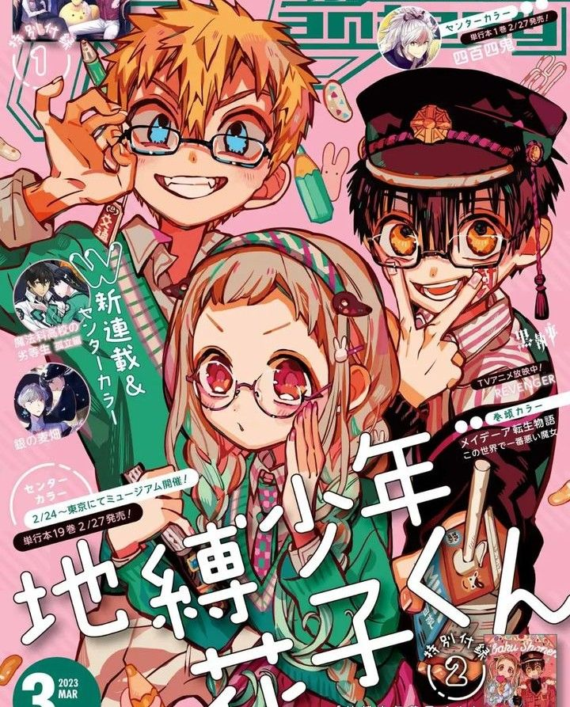
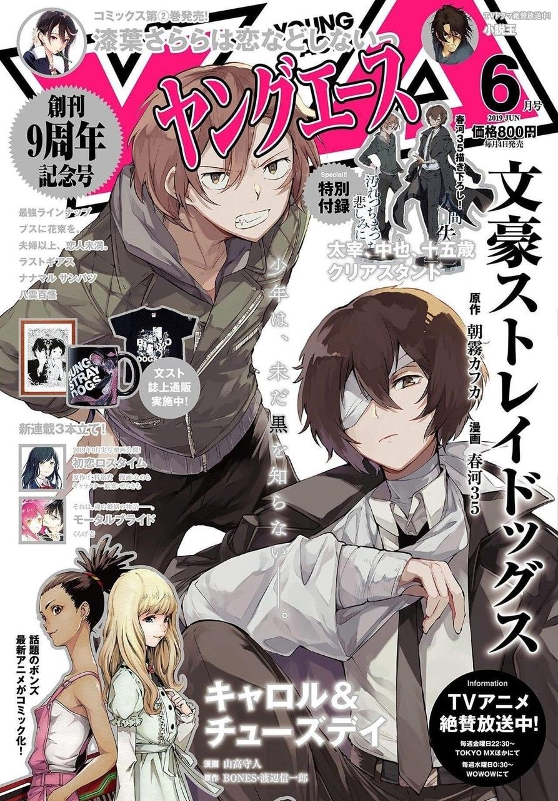
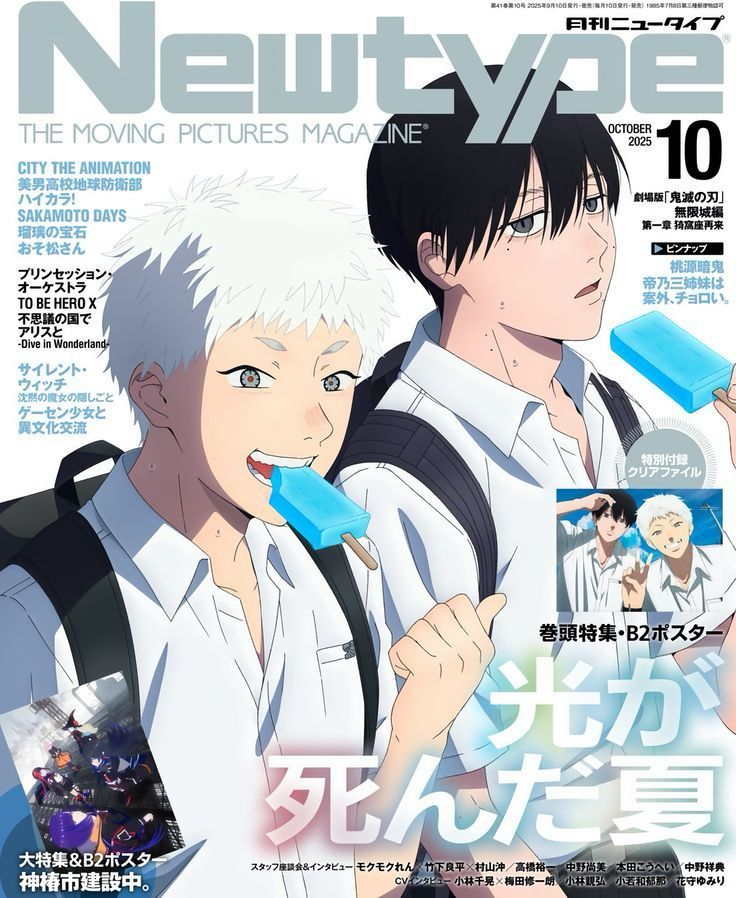
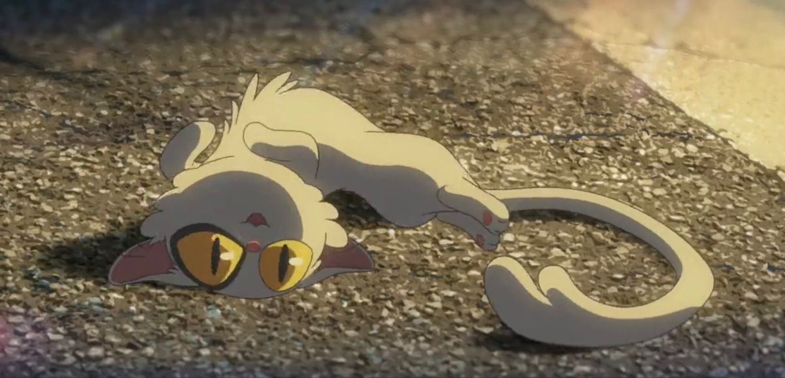

Bienvenido a tu rincón dedicado al arte japonés. Aquí encontrarás una selección curada de mis series favoritas, desde clásicos como Sakura Card Captor hasta los éxitos actuales como Jujutsu Kaisen.
Navega a través de nuestras cartas de personajes y descubre por qué estas historias han cautivado a millones. ¡Prepárate para sumergirte en aventuras épicas!

Una breve descripción de por qué este anime es perfecto para empezar. Habla sobre la trama, el género o su impacto.

Descubre los animes que han arrasado en popularidad. Una pequeña introducción sobre qué los hace tan queridos.

Mi selección personal de los mejores animes de todos los tiempos. Un pequeño vistazo a lo que encontrarás.

Explora el tráiler destacado de la película "Suzume". Una introducción a la historia y lo que puedes esperar de esta obra cinematográfica.